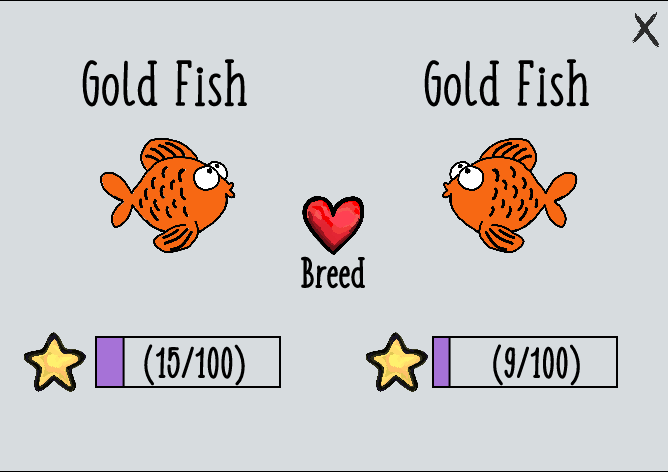
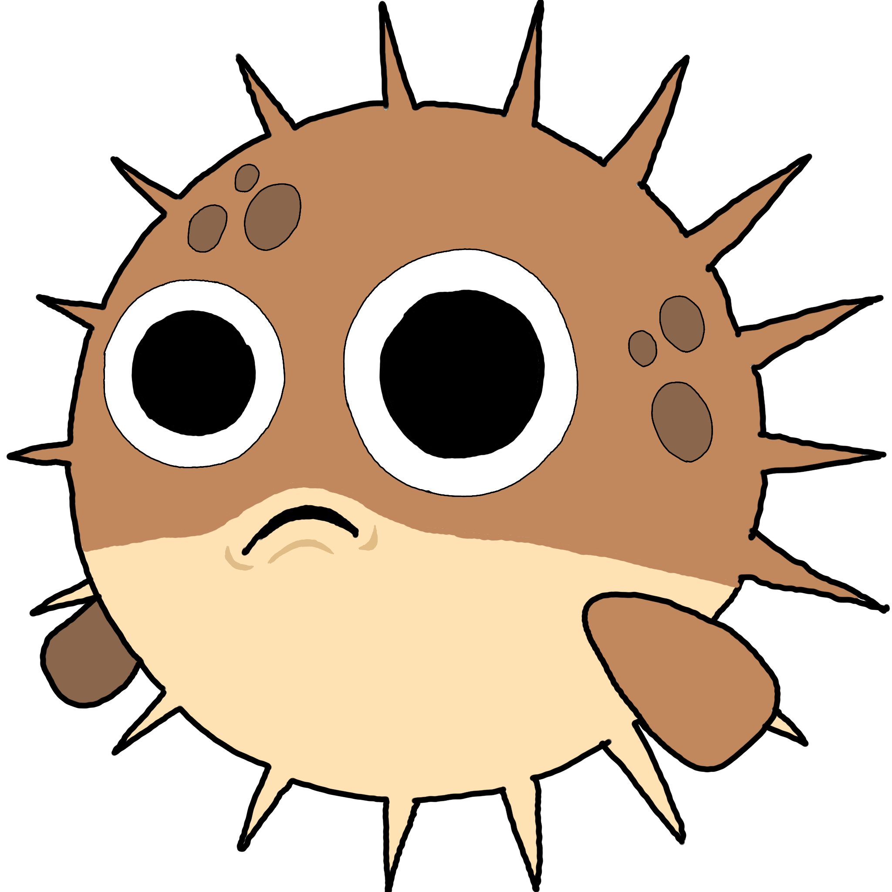

Fish Tank Simulator
Me and my partner created a Fish Tank Simulator Game, with hand drawn graphics, using P5.js, Jquery, and Vanilla Javascript.
The goal was to make a customizable enviornment where you could keep digital fish, feed them to keep them healthy,
sell them to get cool items, and breed them to grow your collection.
All the source code can be found on Github.
Our inspiration for this game was to create a fun simulated environment that was both relaxing and engaging,
and had many different states involved. We divided the work through Trello tickets and Github branches,
to closely mimic a real-world engineering project.
Below is a playable version of the game. If you want to play it full size click here.
How to Play
Controls
Simply click on an icon from the toolbar to select that tool and refer below to read about what it does.
Functional Tools
Here is a list of tools that can be used to interact with the fish and the enviornment.
| Icon | Name | Cost | Description |
|---|---|---|---|
| Cursor | Free | Can select different fish to view stats. | |
 |
Shop | Free | Click this to access the in game store. |
 |
Breed | Free | Click on two fish and press the breed button on the menu that pops up to breed two fish. |
 |
Toilet | $15 | Click on any fish to remove it from your tank. |
 |
Common Food | $18 | Drops flakes to heal fish by 2 HP. |
 |
Rare Food | $38 | Drops flakes to heal fish by 4 HP. |
 |
Legendary Food | $95 | Drops flakes to heal fish by 8 HP. |
 |
Common Egg | $10 | Click anywhere on the tank to spawn a common fish. |
| Rare Egg | $300 | Click anywhere on the tank to spawn a rare fish. | |
 |
Legendary Egg | $1300 | Click anywhere on the tank to spawn a legendary fish. |
| Treasure | $400 | Click anywhere on the tank to spawn a chest that drops coins. |
Cosmetic Tools
Here is a list of tools that can be used to enhance and customize the look of the environment.
| Icon | Name | Cost | Description |
|---|---|---|---|
 |
Sand | $10 | Drops sand particles onto the fish tank. |
 |
Rock | $15 | Use to place rocks on the enviornment. |
 |
Grass | $15 | Use to place grass on the enviornment. |
| Log Sign | $100 | Use to place a log on the enviornment. | |
| Barrel | $150 | Use to place a barrel that releases bubbles into the tank. |
Gameplay
During the game, the player can spawn in different fish and breed them to spawn more fish. Then to make money the player can start selling some of their fish, and with the money they can buy cosmetics to customize the tank or save up to buy rare and legendary fish eggs, which are sold for more.
Fish
Rarity
The game is set up to have 6 different kinds of fish that go from tiers S to F. The rarity of the fish determine the tier the fish will be in and each tier of fish has a different look. S tier has a rarity range of 95-100, A tier has a rarity range of 85-94, B tier has a rarity range of 70-84, C tier has a rarity range of 50-69, D tier has a rarity range of 25-49, and finally F tier has a rarity range of 0-24.
Breeding

The player can breed fish by selecting the breed tool on the top left. Afterward, the player can select any two fish of their liking and press the breed button on the top right menu. However, the player can only hatch one egg at a time, so the player must wait for the offspring egg to hatch before they can breed again. The offspring's rarity range will depend on both of their parent's rarity as well as a 'random' factor.
Fish Types
| Icon | Name | Tier | Rarity Range |
|---|---|---|---|
 |
Aqua | S | (95-100) |
| Shark | A | (85-94) | |
 |
Sea Horse | B | (70-84) |
| Angel Fish | C | (50-69) | |
|  | Puffer Fish | D | (25-49) |
| Gold Fish | F | (0-24) |
Programming
Resources
- P5.js- for manipulating and drawing everything on to the HTML5 canvas.
- jQuery- for selecting elements from the DOM in order to perform the resizing functionality.
- FreeSound- For getting non-copyrighted music files.
Files
- index.html- holds the html code for the project.
- images- holds all images for the game.
- sounds- holds all mp3 files for the game.
- font- holds all font files for the game.
- documentation- holds all documentation files for the game.
- css- holds some basic styling rules for the documentation.
- images- holds some images for the documentation.
- css
- index.css- holds some basic styling rules for the canvas.
-
js
- jquery-3.3.1.min.js- holds jquery library.
- jquery.documentsize.js- holds the resize canvas logic for the game.
- sketch.js- holds the game logic.
Draw Loop
Our draw function is the main loop of the game.
Here we will handle the different routes that the game will draw as well as add a custom cursor.
The first being the main menu, then the tank scene, and finally the store.
To see more of what each route does feel free to check them out on
Github
inside the defined methods of the Game class.
function draw() {
imageMode(CENTER);
//draw game scene
if(game.scene === "tank"){
game.drawTank();
}
else if(game.scene === "store"){
game.drawStore();
}
else if (game.scene === "menu"){
game.drawMainMenu();
}
//add custom cursor
noCursor();
image(game.cursor, mouseX, mouseY, 20, 20);
}
Game Class
The majority of the tank code is stored in the Game class.
The state of the game is stored in the game.scene variable, with the three possible values being:
menufor pre-game play, before you start the game and have to fill the tank with watertankfor the main game play, when you feed and interact with your fishstorefor the store scene, when you can buy new items for your tank
Fish Class
Fish swim happily around the tank, but while this happens, they constantly get a bit more hungry,
with a this.health -= this.healthLoss variable decreasing.
The fish also have a drawstats() method that is called when a fish is clicked.
A fish that you forgot to feed will eventually have its health propery reach 0, causing it sink to the bottom of the tank.
You won't be able to sell this fish, and will have to use the toilet tool to flush your dead fish away.
If a fish is alive, it can move around the tank using Perlin noise, so that its movement seems natural.
The animation of the fish is done through cycling through an array of fish images.
We used the constrain function to ensure that the fish doesn't hit the edges of the walls.
To make this seem even more realistic, each fish has its own this.hitBox to keep track of
what it can touch.
Finally, fish can breed provided our forumla for calculating an offspring's rarity:
(parent1+parent2+parent3)/3, where parent3 is a random number between 0-100, and parent1 and parent2
are the selected parents of the fish.
Food Class
To feed a fish, you can buy some fish food and drop it over a fish to restore its hunger level.
The class fish food uses basic collision to detect that the food is touching the fish and if so restores
the fish by the food instance's healthIncrease property. Each food particle will slowly disolve
by lowering its alpha value by a factor of the food instance's disolveSpeed property.
Tool Class
Tools are stored in the Toolbar class, and use hitboxes to detect when
you click on one of the tools. Additionally, the state variable updates
to reflect your current tool, such as cursor or sand, and the
cursorImage also updates to reflect your current tool.
Water Class
The most basic component of the fish tank's environment is water, constructed by the
Water class. However, this class just represents the randomly colored and
sized water particles that flow out of your mouse's position and float downwards. The
real magic is in the drawWater() function, which is adapated from
YiyunJia's code.
Using Perlin noise, a visual effect is created where it looks like the water is wavy
and sloshing around in your tank as you fill it up. For added fun, there's also a sound
that gets triggered as you fill the fish tank.
Sand Class
Sand particles are modeled after the Sand class, with new sand being
dropped into the tank and stored in an array. Sand
particles are randomly sized and sink to the bottom of the tank by a factor of the sand instance's ySpeed, to add
some visual flair to your tank.
Decorations Class
You can drop in new decorations defined in the Decoration class to your tank.
As usual, they float to the bottom, and will be layered on top of the sand you added previously.
However, the treasure chest is a special decoration that will drop a coin at the interval given by its property coinDelay.
No human being, however great, or powerful, was ever so free as a fish.
John Ruskin